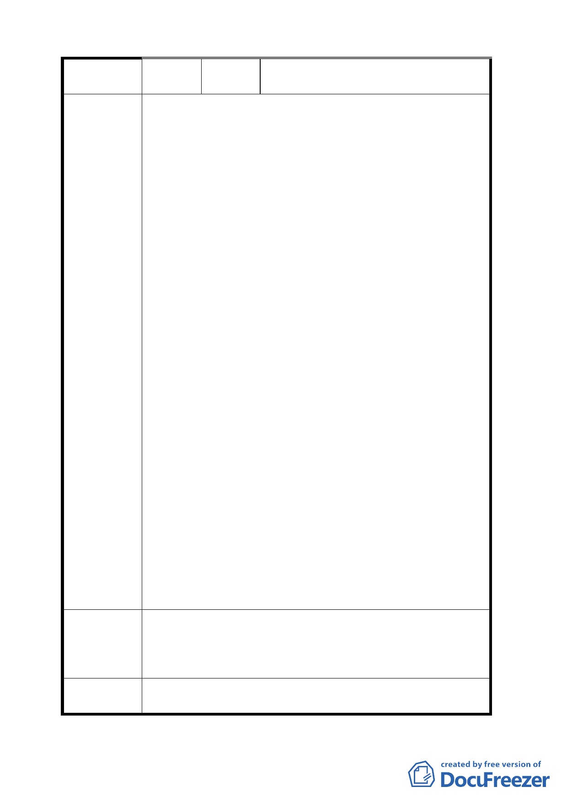

陳情理由
建議辦法
委員會
決議
黃里長金財、周里長進財暨住戶代
表
本案時程獎勵附帶條件於實務操作相扞格，導致窒
礙難行，且都市計畫是個行政計畫，不應限縮都市更新
條例之規定，增加人民在法律上所無之限制，故請取消
時程獎勵之附帶條件。說明如下：
1.時程獎勵要求完整街廓，根本不符合現實的規劃，且
現行都市更新條例就有時程獎勵，不宜以街廓條件限
縮獎勵。
更新法令的變遷速度根本趕不上時代的變遷，當年遷
建基地在好的地段，例如商業區大馬路邊，早在 60
年代、70 年代、80 年代已改建，對那些早已改建的
大樓，皆位在商業區及大馬路邊，根本沒有再改建之
誘因及條件，要求與已不堪使用、老舊的建物化成一
完整街廓進行改建，困難重重。市府在制訂放寬遷建
基地時程獎勵，又設定嚴苛條件，導致時程獎勵「宣
示意義大於實質意義」。臺北市遷建基地最無法突破
的是巷弄的狹窄及造成嚴重的公共安全問題，住宅品
質環境窳陋，在這麼多附帶條件下，根本拿不到 15
％的時程獎勵，遷建基地也無法更新改建。
2.遷建基地的更新案不論就都市計畫或開發規模，皆非
屬都市設計審議委員會之審議範圍。
目前更新時程獎勵是法令所規定，更新案審議是都市
更新審議委員會之性質上亦無需經都市設計審議委
員會審議。且都市設計委員會之審議，常超出更新之
範圍，使好不容易成案之更新計畫受到阻礙。此外，
更新皆有時程之限制，增加 1 個委員會審議，往往浪
費更新的時程，使更新案破功，無法完成。行政處分
不應增加法律所無之限制，遷建基地的更新時程獎勵
既然屬於更新的 1 種，及應依都市更新條例及臺北市
都市更新自治條例之規定，由更新審議委員會審議，
不應疊床架屋，再交予都設委員會審議。
1.建議臺北市遷建基地既已劃為更新地區，即應直接獲
得時程獎勵，無須「完整街廓」、「都市設計及土地開
發許可審議委員會審議」等條件。
2.本案審議時住戶代表及里長希望能列席說明。
同委員會決議第一點。
11